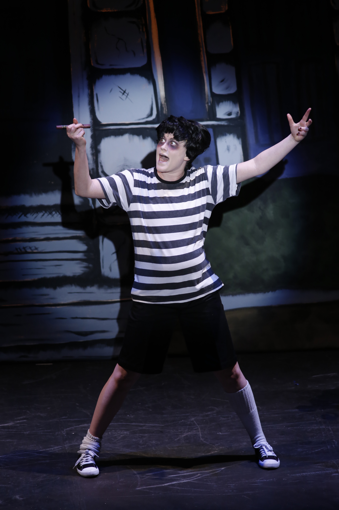
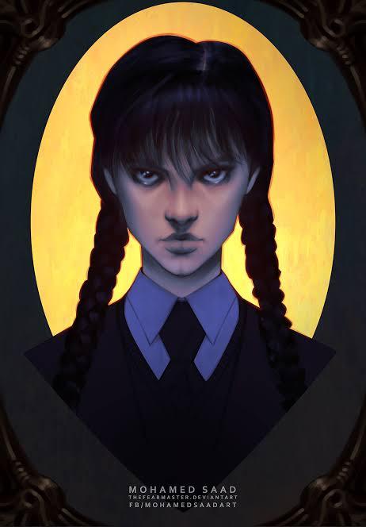
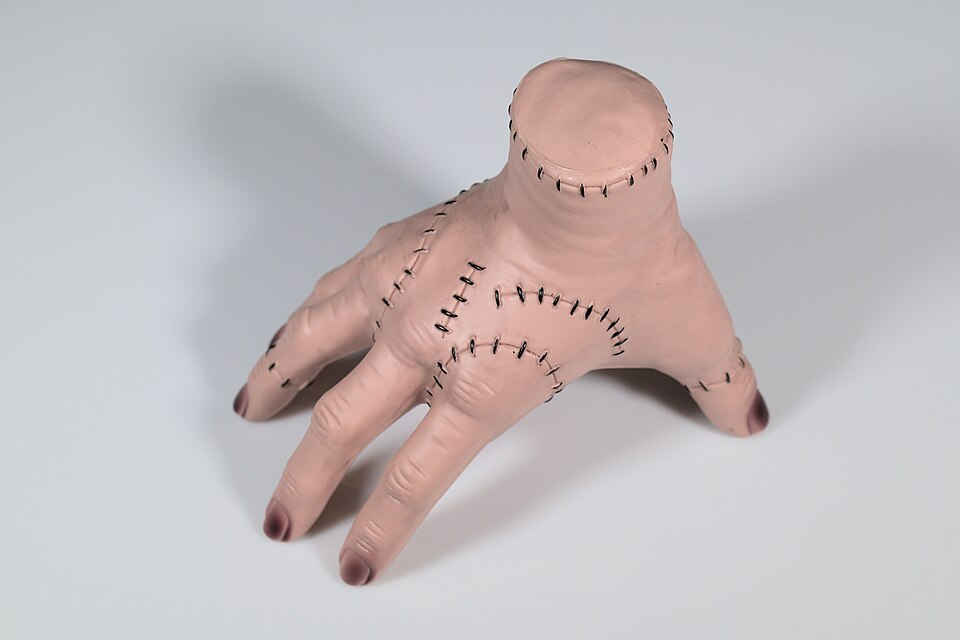
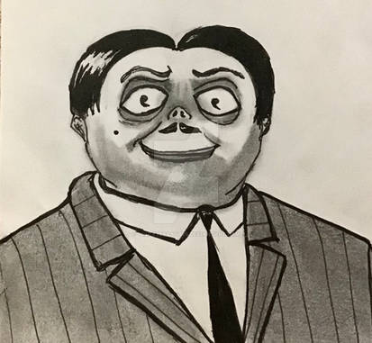
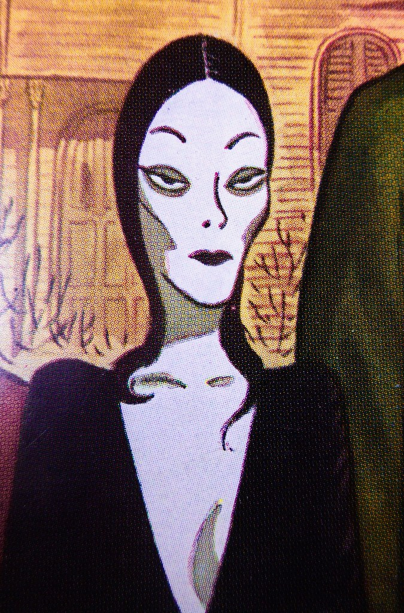

Biography
Pugsley was born on August 14, 2010. As a Leo, he takes refuse to take orders and do household chose.His favorite food is a jar of Garlic Sauce.

Biography
Wednesday was born on November 3, 2008. As a Scorpio, she spends the playing mindgames with the prisoners in Doomsville. Her favorite food is a bucket of Chicken Wings.

Biography
Thing was born on February 18, 2011. As a Aquarius, he spends the week vandalizing and breaking the rules of the university. His favorite food is a slice of Pepperoni Pizza.

Biography
Gomez was born on May 22, 1984. As a Gemini, he spends the week deceiving peole and chatting everyone at the party. His favorite food is a plate of soft-boiled Egg.

Biography
Morticia was born on July 9, 1988. As a Cancer, she spent the week tending to her conservatory plants and looking after the entire family. Her favorite dessert is a plate of mango sticky rice.